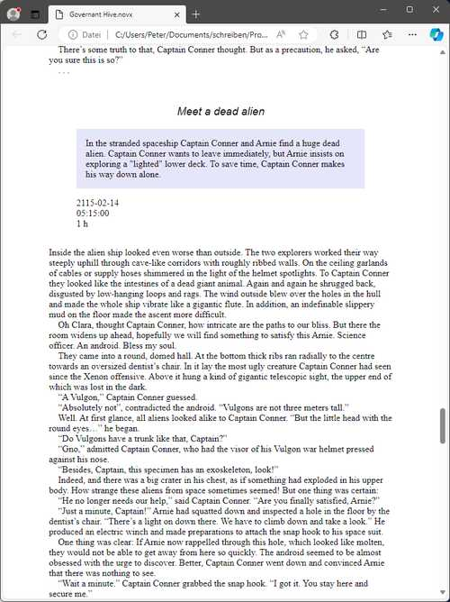

Datei-Menü
Dateioperationen
Neu
Ein neues Romanprojekt anlegen
Mit Datei > Neu können Sie ein neues Projekt erstellen. Damit öffnen Sie zunächst ein Untermenü.
Bemerkung
Das Untermenü kann durch Plugins erweitert werden, um mehr Dateiformate anzubieten, aus denen ein novelibre-Projekt erzeugt werden kann.
- Leeres Projekt
Damit schließen Sie das laufende Projekt und erzeugen ein leeres Projekt.
Ein Dateiauswahldialog fragt nach Speicherort und Dateinamen des neuen Projekts. Falls Sie diesen Dialog abbrechen, können Sie den Dateinamen auch später beim Abspeichern vergeben.
- Aus ODT erzeugen…
Damit schließen Sie das laufende Projekt und erhalten einen Dateiauswahldialog, der nach einem ODT-Dokument fragt, aus dem das neue Projekt erzeugt werden soll.
Das neu angelegte Projekt wird automatisch im selben Verzeichnis wie das ODT-Dokument abgelegt. Es hat den Dateinamen des Dokuments und die Erweiterung .novx.
Falls im Verzeichnis bereits ein Projekt mit dem Namen des ODT-Dokuments existiert, wird kein neues Projekt angelegt.
Falls Sie ein zuvor exportiertes Dokument auswählen, das zu einem existierenden Projekt gehört, wird dieses Projekt aktualisiert und geladen.
Das ODT-Dokument kann entweder ein angefangenes Werk, sein, d.h. ein Romanmanuskript mit Kapitelüberschriften und Abschnitten, oder eine Gliederung, welche die Kapitel- und Abschnittsstruktur mit den Titeln und Beschreibungen enthält.
Öffnen…
Ein Romanprojekt öffnen
Mit Datei > Öffnen oder Strg-O
können Sie eine existierende Projektdatei öffnen.
Bemerkung
Wenn Sie ein Projekt öffnen, wied das aktuell geladene Projekt geschlossen. Falls es noch ungesicherte Änderungen gibt, werden Sie Zum Abspeichern aufgefordert.
Neu laden
Das Romanprojekt neu laden
Mit Datei > Neu laden oder Strg-R
können Sie das Projekt im Arbeitsspeicher
mit der zuletzt gesicherten Version überschreiben.
Tipp
Auf diese Weise können Sie Änderungen der aktuellen Sitzung rückgängig machen.
Bemerkung
Falls die Projektdatei seit dem letzten Öffnen oder Abspeichern auf der Festplatte geändert wurde, erhalten Sie eine Warnmeldung.
Sicherungskopie wiederherstellen
Die zuletzt erzeugte Sicherungskopie wiederherstellen
Mit Datei > Sicherungskopie wiederherstellen oder Strg-B
können Sie die vorletzte Version der Projektdatei laden.
Dadurch wird die zuletzt gespeicherte Projektdatei überschrieben.
Sie erhalten eine Warnung, dass Änderungen verlorengehen.
Bemerkung
Mit „Sicherungskopie“ ist die Datei mit der Erweiterung .bak im Projektverzeichnis gemeint.
Nach dem Wiederherstellen der Sicherungskopie gibt es keine Sicherungsdatei mehr im Projektverzeichnis. Eine neue wird erzeugt, sobald Sie das Projekt speichern.
Baum aktualisieren
Die Aktualisierung der Baumansicht erzwingen, nachdem Änderungen gemacht wurden
Mit Datei > Baum aktualisieren oder F5
können Sie die Baumansicht manuell aktualisieren.
„Normale“ Abschnitte, die in ein „unbenutztes“ Kapitel verschoben wurden, werden ebenfalls „unbenutzt“.
Teile und Kapitel werden entsprechend den Einstellungen für die automatische Nummerierung nummeriert.
Das „Papierkorb“-Kapitel wird, falls nötig, ans Ende des Buchbereichs verschoben.
Sperren
Das Projekt schützen, während es außerhalb bearbeitet wird
Mit Datei > Sperren oder Strg-L
können Sie das Projekt sperren.
Bemerkung
Bevor Sie das Projekt sperren können, müssen alle Änderungen gespeichert sein.
Entsperren
Das Projekt zur Bearbeitung freigeben
Mit Datei > Entsperren oder Strg-U
können Sie das Projekt entsperren.
Projektordner öffnen
Den Dateimanager aufrufen
Mit Datei > Projektordner öffnen oder Ctrl-P
können Sie den Projektordner im Dateimanager öffnen.
Das kann nützlich sein, wenn Sie z.B. Dateien löschen oder
Konfigurationsdateien bearbeiten wollen.
Hinweis
Falls Sie Ihr Projekt „außerhalb“ bearbeiten wollen, erwägen Sie, es vorher zu sperren.
Style sheet kopieren
Ein css Style sheet im Projektordner bereitstellen
Mit Datei > Style sheet kopieren können Sie das Style sheet novx.css in den aktuellen Projektordner kopieren. Damit können Sie die .novx-Projektdatei mit einem Webbrowser betrachten.
Das folgende Bild zeigt einen Edge-Browser Screenshot: novelibre Projekt, dargestellt mit Hilfe des Style sheets.
Hinweis
Abhängig von Ihrem Webbrowser und dem Betriebssystem müssen
content type bzw. MIME type von .novx-Dateien als
„text/xml“ registrieret sein.
Unter Windows erreichen Sie das, indem Sie das Skript
<home>\.novx\add_novelibre.reg ausführen.
Manuskript verwerfen
Das aktuelle Manuskript durch Umbenennen verwerfen
Mit Datei > Manuskript verwerfen können Sie dem aktuellen Manuskript die Erweiterung .bak anhängen. Das kann helfen, Verwirrung über Änderungen, die mit novelibre und Writer gemacht wurden, zu vermeiden.
Hinweis
Sie können jedes bisher „zur Bearbeitung“ exportierte Dokument über den Importieren-Dialog löschen.
Speichern
Das Projekt speichern
Mit Datei > Speichern oder Strg-S
können Sie das Projekt speichern.
Dabei wird automatisch eine Sicherungskopie des letzten Stands erzeugt.
Bemerkung
Falls die Projektdatei seit dem letzten Öffnen oder Abspeichern auf der Festplatte geändert wurde, erhalten Sie eine Warnmeldung.
Speichern unter…
Das Projekt unter einem anderen Namen/an einem anderen Ort speichern.
Mit Datei > Speichern unter… or Strg-Umschalt-S
können Sie das Projekt unter einem anderen Dateinamen oder an einem anderen
Ort speichern.
Es öffenet sich ein Dateiauswahldialog, um den neuen Dateipfad und den
Dateinamen anzugeben.
Bemerkung
Ihr laufendes Projekt bleibt in dem Zustand, wie es zuletzt gespeichert wurde. Zwischenzeitliche Änderungen wirken sich dann auf das neue Projekt aus.
Schließen
Das Romanprojekt schließen
Mit Datei > Schließen können Sie das Projekt schließen, ohne das Programm zu beenden. Beim Schließen werden Sie gefragt, ob Sie das Projekt speichern wollen, falls es ungesicherte Änderungen gibt.
Bemerkung
Falls Sie ein anderes Projekt öffnen, wird das aktuell geladene Projekt automatisch geschlossen.
Beenden
Das Programm beenden
Unter Windows können Sie das Programm mit Datei > Beenden oder
Alt-F4beenden.Andernfalls können Sie das Programm mit Datei > Beenden oder
Strg-Qbeenden.
Bemerkung
Beim Beenden werden Sie gefragt, ob Sie das Projekt speichern wollen, falls es ungesicherte Änderungen gibt.